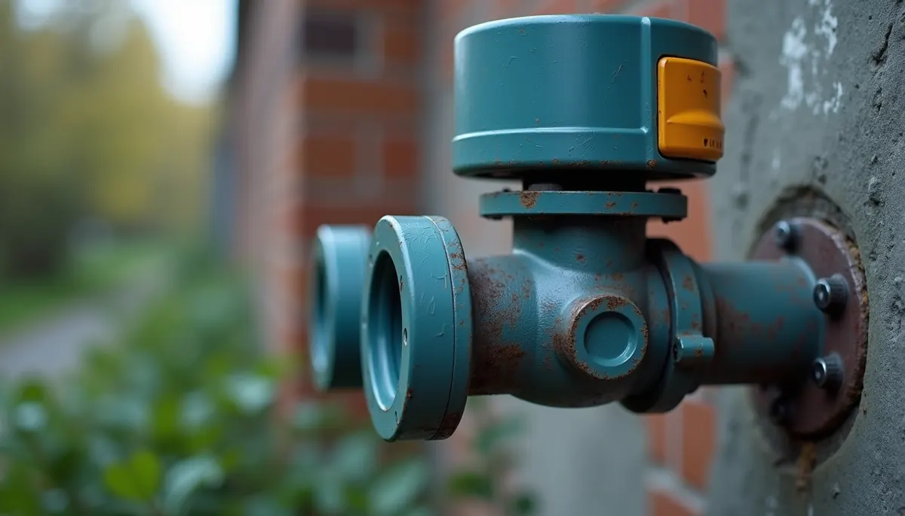
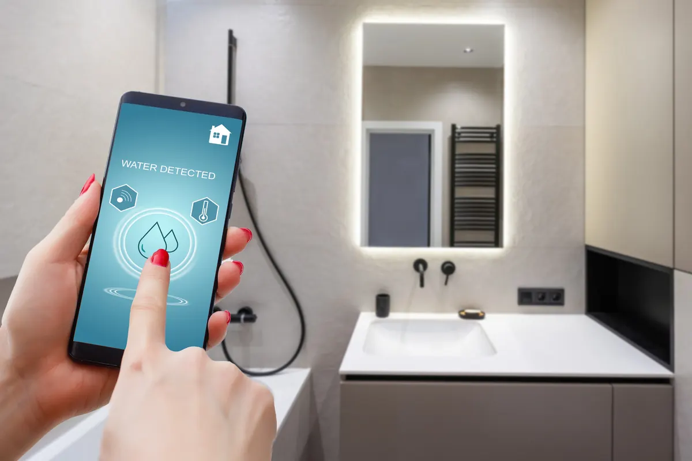

Water damage can be a homeowner's worst fear, leading to expensive repairs, mold issues, and significant stress. Just imagine a leak hiding behind your walls, quietly causing destruction. What if there was a simple solution that could reduce this risk and save you money on homeowners insurance? Enter smart leak detection valves.
What is a Smart Leak Detection Valve?
A smart leak detection valve is a state-of-the-art device placed on your home's main water supply line. Unlike basic leak detectors that only alert you to water presence, these advanced valves continuously monitor water flow, pressure, and temperature in your plumbing.
Here’s how they function:
- Constant Monitoring: Using technologies like ultrasonic waves or mechanical turbines, smart leak detection valves keep track of water usage in real-time.
- Anomaly Detection: These systems analyze your household's typical water usage patterns. If an unusual flow occurs—like continuous movement when no water should be flowing, or a sudden spike in usage—the valve detects it as a potential leak.
- Instant Alerts: Homeowners receive immediate notifications through a smartphone app, text, or email, no matter where they are.
- Automatic Shut-off: When a significant leak is detected, the intelligent valve automatically shuts off the water supply to your entire home, preventing catastrophic damage.
- Temperature Monitoring: In addition to leak detection, some systems monitor temperatures to prevent pipes from freezing, which helps avoid potential bursts during cold weather.

How Smart Valves by Angle Stop Plumbing Reduce Your Insurance Costs
Insurance providers want to minimize water damage claims, which constitute about 24% of all homeowner claims, with average payouts ranging from $10,000 to $15,000 per incident. By installing a smart leak detection valve, homeowners can significantly lower their insurance risks, and many insurers reward this with discounts.
Here’s how these valves lead to lower premiums:
- Reduced Risk of Costly Claims: By drastically lowering the chances of major water damage, homeowners can often negotiate lower insurance premiums due to proactive measures taken to protect their property.
- Verification of Preventive Measures: Insurance adjusters may see the installation of a smart valve as a serious commitment to maintaining the property, further justifying lower policy costs.
- Improved Responsiveness to Emergencies: With immediate alerts and automatic shut-off options, homeowners can address leaks quickly, which results in fewer claims filed with insurance companies.
Benefits of Smart Leak Detection Valves
Peace of Mind
One of the standout advantages of these valves is the peace of mind they provide. Knowing your home’s plumbing is under constant surveillance allows you to relax, whether you are at work, on vacation, or at home.
For instance, should a leak develop, you will receive an instant alert, enabling you to act before the situation worsens. For busy homeowners, this kind of assurance is invaluable.
Cost Saving Beyond Insurance
Beyond reducing insurance costs, a smart leak detection valve can save on repair expenses. Even a small leak can escalate quickly into a major disaster, leading to thousands of dollars in repair bills. Early detection means minor leaks can be fixed before they become costly problems. For example, fixing a small leak might cost only a few hundred dollars, while ignoring it could lead to damages costing tens of thousands.
Energy Efficiency
In addition to minimizing water damage risks, smart leak detection valves help you identify excessive water use, prompting more efficient consumption practices. By monitoring your water flow, you can identify trends that suggest inefficiencies, allowing for better conservation efforts. Studies indicate homes with such systems can reduce water waste by up to 20%.
Enhanced Home Value
Installing smart leak detection valves can boost your home’s value. In a competitive real estate market, potential buyers will appreciate the added safety and efficiency. Modern features can make your home stand out, enhancing its market appeal.
Choosing the Right Smart Leak Detection Valve
Compatibility
When selecting a smart leak detection valve, ensure it fits your home's plumbing. Some devices may not be suitable for all types of pipes or water systems. Consulting with a plumbing professional is crucial for proper installation.
Features
Look for models equipped with real-time monitoring, instant alerts, and automatic shut-off capabilities. Some systems even include temperature alerts to prevent frozen pipes, particularly useful in colder climates.
Installation and Maintenance
Professional Installation
While some may be comfortable taking on DIY projects, a smart leak detection valve is best installed by professionals. Incorrect installation can lead to ineffective monitoring and may void warranties. Always choose a qualified plumber for installation.
Periodic Testing
Once installed, it’s essential to periodically test your smart leak detection valve to ensure optimal performance. Following manufacturer maintenance guidelines is vital for longevity and reliability. Regular checks for software updates can also enhance functionality over time.
User Experiences
Real-Life Success Stories
Many homeowners have reported positive experiences with smart leak detection valves. One family in a cold region avoided disaster when their smart valve detected unusual water flow during a cold snap, stopping potential pipe bursts.
Another homeowner shared how their valve alerted them to a small leak that could have caused extensive damage. Thanks to early detection, they only had to spend a few hundred dollars on repairs instead of facing thousands in water damage.
Community Feedback
User reviews often highlight the significant value of these devices. Generally, people agree that while the upfront costs may be a consideration, the long-term savings in repairs, insurance premiums, and peace of mind are worth the investment.
Safeguard Your Home with Smart Technology
Smart leak detection valves are an essential investment for any responsible homeowner. By lowering the risk of water damage and potentially reducing homeowners insurance premiums, these devices provide significant financial benefits over time.
Investing in a smart leak detection valve means taking proactive steps for your home's safety and longevity. With water damage being a constant threat, now is the time to act. Protect your home, your finances, and your peace of mind with this innovative technology.